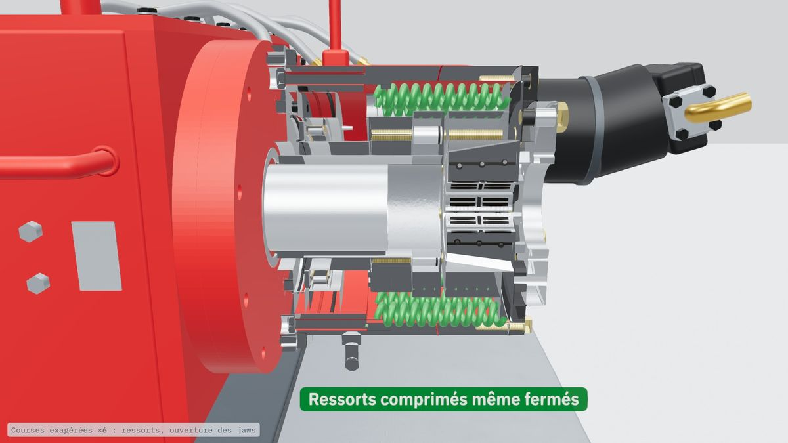
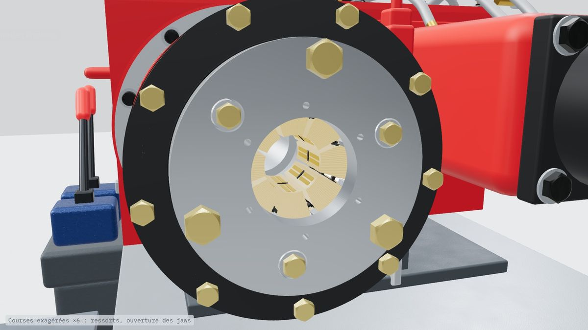
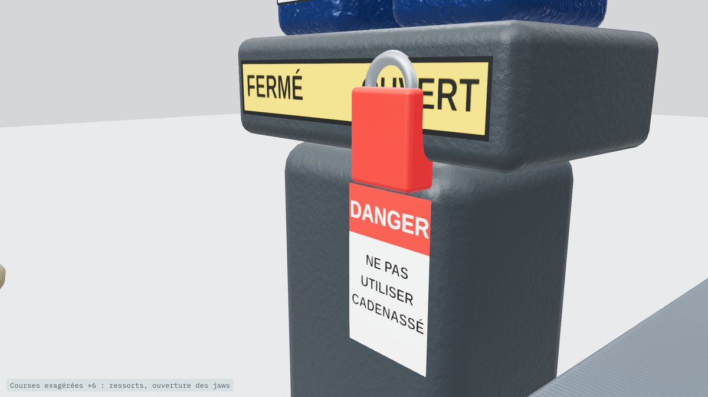
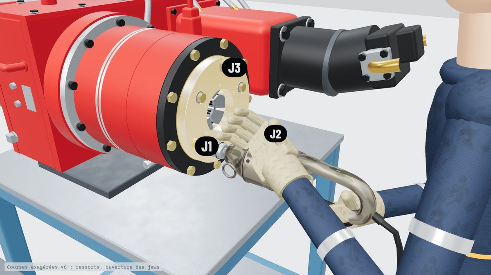
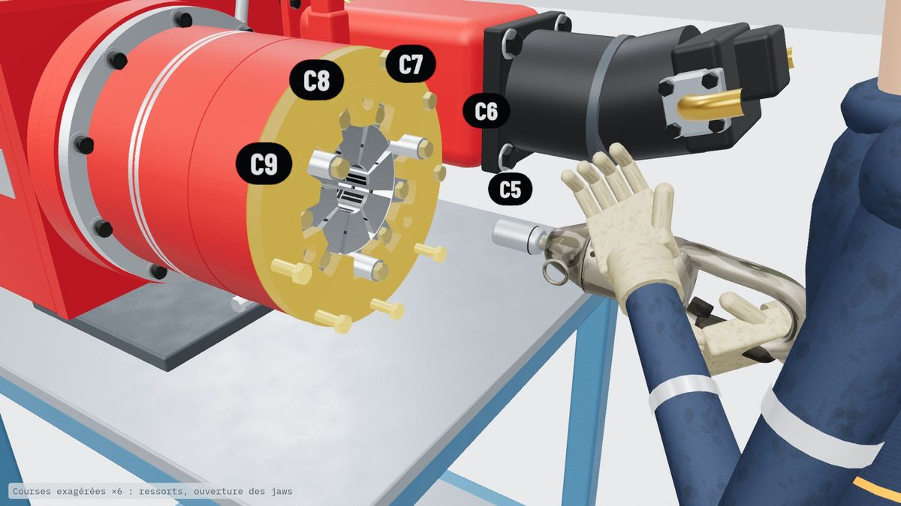
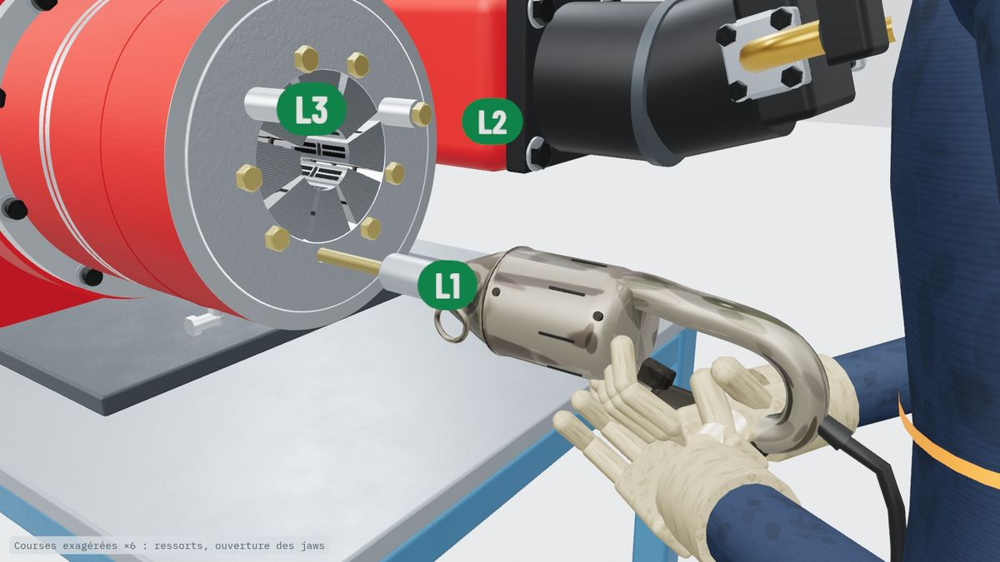
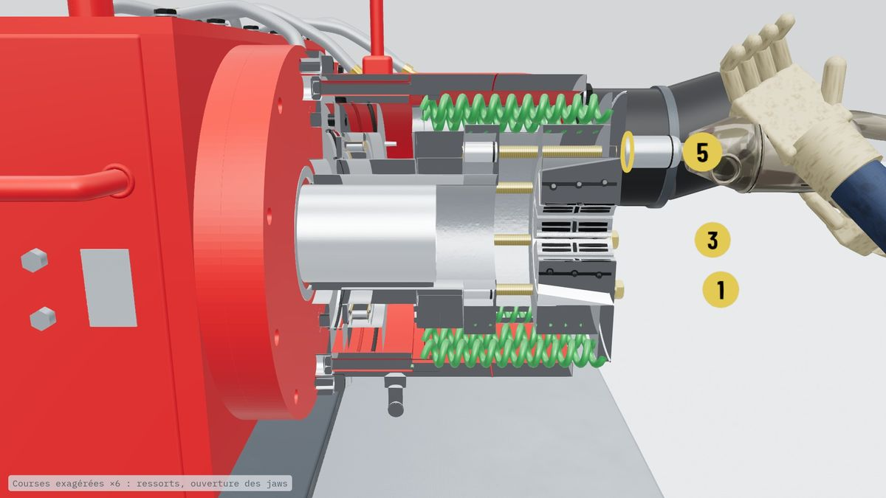
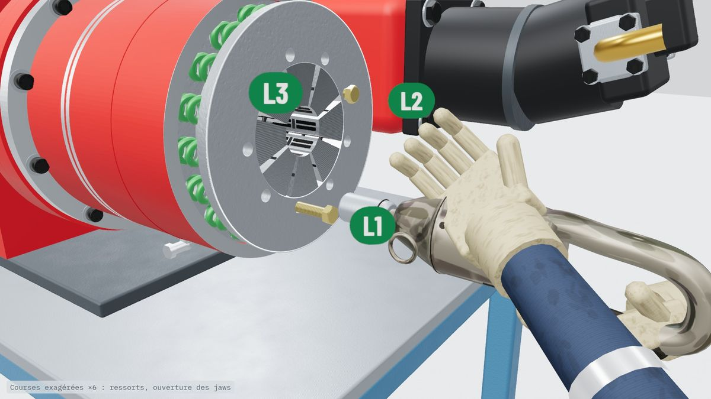
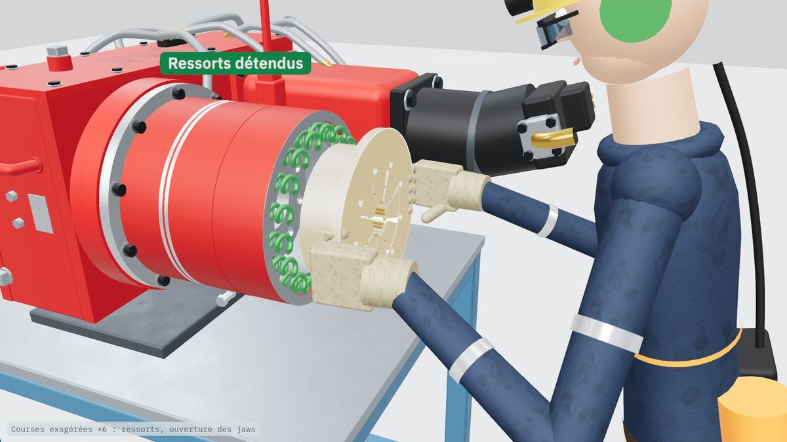

Démontage du cône d'un mandrin, étape par étape
Les 9 étapes de la procédure, dans l'ordre : quoi faire, avec quelle clé, et pourquoi. Cochez chaque étape une fois faite ; les cases restent cochées sur cet appareil.
Avant de commencer
Trois règles
- Manettes fermées avant de cadenasserOuvertes, les ressorts sont écrasés au maximum : le cadenas n'y change rien.
- Étape 6 avant l'étape 7Les 3 boulons longs remis sans bushing avant de toucher aux boulons du cône.
- Jamais un boulon du cône sorti au complet sous chargeUn tour à la fois, dans l'ordre 1 à 6, jusqu'à ce que les ressorts soient détendus.
PRO-OP-DD-005
Les 9 étapes
-

Manettes fermées
- Mettre les manettes du clam et du chuck en position fermée.
Pas en position ouverte : l'hydraulique pousse le vérin, les ressorts sont écrasés au maximum. Si on cadenasse comme ça, le cadenas n'y change rien : toute cette énergie reste prise dans le mandrin.
Pourquoi fermées ? Les ressorts sont alors étirés au maximum : c'est là qu'il reste le moins d'énergie. Ils restent quand même comprimés.
-

Mâchoires (jaws) fermées
- Vérifier que les mâchoires sont fermées.
Pourquoi ? Mâchoires fermées : les ressorts ont poussé le cône vers l'avant, l'hydraulique ne les retient plus.
-

Cadenasser
- Chacun pose son cadenas.
- Vérifier que la foreuse ne peut pas repartir.
Pourquoi ? Le cadenas empêche l'hydraulique de repartir. Mais les ressorts, eux, poussent encore : c'est l'énergie résiduelle.
-

Retirer le couvert des mâchoires (jaw cover)
- Dévisser les 3 boulons ¾ po (clé 1 ⅛ po).
- Retirer le couvert.
-

Retirer le couvercle (cap holder)
- Enlever les 9 boulons ½ po (clé ¾ po).
- Retirer le couvercle.
Attention : le cône et ses 9 boulons apparaissent. Les ressorts sont toujours comprimés.
-

Remettre les 3 boulons longs sans bushing
- Un boulon long à la fois (½ × 8 po) : le desserrer et retirer son bushing (1 ½ po).
- Resserrer complètement le boulon, sans bushing.
Pourquoi ? Sans bushing, ils vissent 1 ½ po plus loin : ils retiennent le cône s'il part, pendant qu'on desserre les 6 autres boulons.
Toujours avant l'étape 7. Sans eux, rien n'arrête le cône.
-

Dévisser les 6 boulons du cône, 1 tour à la fois
- Dévisser chaque boulon (½ × 6 ½ po) d'un tour seulement, dans l'ordre 1 à 6.
- Refaire le tour de 1 à 6, jusqu'à ce que les ressorts soient détendus.
- Retirer ensuite les 6 boulons.
Pourquoi ? Les 6 boulons partagent la charge : les ressorts se détendent peu à peu, également. C'est plus long, mais on reste en contrôle.
Jamais un boulon sorti au complet sous charge. Se placer hors de l'axe du mandrin, jamais devant le cône. Si un boulon résiste : pas d'impact drill sous charge, on arrête et on en parle au superviseur.
-

Retirer les 3 boulons longs
- Les ressorts sont détendus : retirer les 3 boulons longs (½ × 8 po).
Pourquoi à la fin ? Ils retiennent le cône jusqu'au bout. Maintenant, ils ne portent plus rien.
-

Changer les pièces
- Sortir le cône (bowl) et les mâchoires.
- Changer les pièces.
Résultat : l'énergie résiduelle a été relâchée lentement ; le cône est resté retenu tout le long.
En cas de doute
On arrête, on en parle
- Le cône reste coincéOn ne le frappe pas pour le décoincer, et on ne reste pas devant : les ressorts poussent encore, il peut être projeté.
- Un boulon ne veut pas se défairePas d'impact drill sous charge. On arrête, et on en parle au superviseur avant de continuer.
- Le quart finit avant la fin de la jobOn pose un scellé sur la foreuse, avec une fiche qui explique la nature de l'intervention. Chacun repose son cadenas avant de reprendre.
- Quelque chose ne semble pas normalOn arrête, et on en parle au superviseur. On regarde ça ensemble avant de continuer.